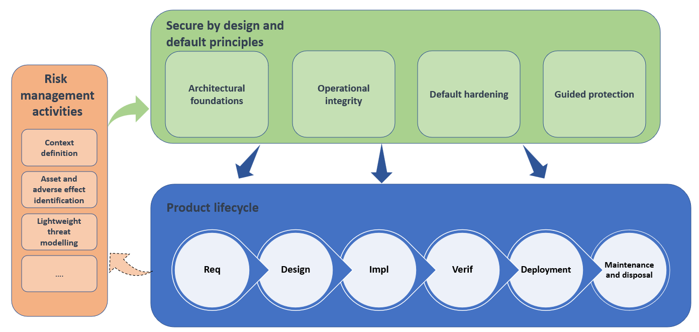

Secure by Design and Default
ENISA's practical playbooks for small and medium-sized companies that make products with digital elements. Each one comes with a friendly summary, a short checklist and the full original text.
Progress is saved only in this browser. Use the “Mark this one as done” button at the end of each checklist.
Where to start
ENISA suggests adopting the playbooks step by step. In short, from its “Progressive adoption” section:
Start with Trust boundaries and threat modelling to find the threats that matter most for your product.
ENISA's examples: playbooks 9, 10, 13, 14, 16, 17, 18 and 20, marked “Early baseline” below, plus any others your risks call for.
Add the remaining playbooks that apply, and improve coverage and automation over time.
ENISA stresses that this order is illustrative, later playbooks are not less important, and legal requirements (including under the EU Cyber Resilience Act) cannot be postponed.
All 22 playbooks
Filter by family or group.
Secure by Design · Architectural Foundations
ENISA: “structural design choices that make a product inherently difficult to compromise or exploit.”
Draw your product, find the doors, decide which ones need a lock first.
02 Least privilegeGive every person and program only the keys they need, only for as long as they need them.
03 Strong identity and authentication architectureKnow exactly who (or what) is knocking, on every door, every time.
04 Attack surface minimisationFewer doors means fewer break-ins. Close everything you do not need.
05 Defence in depthLayers, like a castle: wall, moat, gate and guards, so one failure is not the end.
06 Open designGood security still works when the attacker has read the manual.
Secure by Design · Operational Integrity
ENISA: “human and procedural practices that maintain product security throughout development, deployment, operation, and retirement.”
Security is not a launch-day job. It lasts from the first sketch to the last switch-off.
08 User-centric designIf the safe way is the easy way, people will take it.
09 Secure coding and verification practicesWrite code that is hard to get wrong, then check it automatically.
10 Logging, monitoring and alertingKeep a diary of what matters, keep it safe, and get a tap on the shoulder when something looks wrong.
11 Configuration and change managementNo silent changes. Every setting is written down, reviewed and easy to roll back.
12 Incident response and recoveryHope for the best, plan for the bad day, and rehearse it.
13 Vulnerability and patch managementFind the holes, decide what to fix first, fix it, and tell people.
14 Supply-chain controlsKnow what goes into your product, and protect the factory that builds it.
Secure by Default · Default Hardening
ENISA: “the factory-shipped state of the software, ensuring that the initial configuration is as restrictive as possible.”
Out of the box, only the essentials are switched on.
16 Restrictive initial accessNo "admin/admin". Every unit starts locked, with its own key.
17 Secure communication by defaultEverything that leaves the box is encrypted and checked, from day one.
18 Unique device identity and secrets by defaultOne stolen key should open one door, not every door you have ever sold.
Secure by Default · Guided Protection
ENISA: “mandatory setup steps, automation, and clear feedback that help users maintain a secure state.”
The product will not go to work until the safety steps are done.
20 Automated maintenance and updatesSecurity updates arrive by themselves, safely, without wrecking the day.
21 Transparent security postureA clear dashboard light: are we in a safe state, and how do we get back if not?
22 Secure recovery and ownership life cycleResets, recoveries and handovers that help the owner, not the intruder.
How the playbooks fit together
